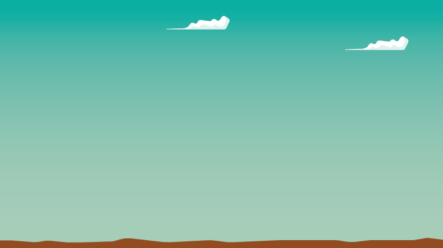
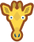
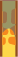
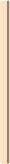
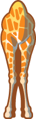
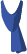
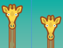

<!DOCTYPE html>
<html dir="rtl" align="right"></html>
<html>
<head>
   <meta charset="utf-8">
   <title>2022-FR-04_closest_height</title>
   <script>
      window.stringsLanguage = 'ar';
   </script>
   <script class="remove" type="text/javascript" src="../../../_common/modules/pemFioi/importModules-1.1_M.js" id="import-modules"></script>
   <script class="remove" type="text/javascript">
      var modulesPath = '../../../_common/modules';
      importModules([
         'jquery-1.7.1', 'jquery-ui.touch-punch', 'raphael-2.2.1', 'JSON-js', 'grid-1.1',
         'beav-1.0', 'beaver-task-2.0', 'simulation-2.0', 'raphaelFactory-1.0',
         'delayFactory-1.0', 'simulationFactory-1.0', 'button-1.0',
         'platform-pr', 'installationAPI.01', 'miniPlatform',
         'randomGenerator-1.0', 'shape-paths-1.1', 'drag_lib-2.1', 'responsiveDOMConverter','fonts-loader-1.0', 'loader-buttonsAndMessages'
      ]);
   </script>
   <script type="text/javascript">
      var respEnabled = Beav.Navigator.supportsResponsive();
      // var respEnabled = false;
      if(respEnabled){
         importModules(['buttonsAndMessages_resp','taskStyles-0.3_M']);
         window.FontsLoader.loadFonts(['fontawesome']);
         task.getMetaData = function(cb) { cb({nbHints: 0, autoHeight: true}); }
      }else{
         importModules(['buttonsAndMessages','taskStyles-0.1']);
      }
   </script>
    
   <script class="remove" type="text/javascript">
    var json = {
       "id": "http://castor-informatique.fr/tasks/2016/2016-FR-01-not-rectangles/",
       "language": "en",
       "version": "fr.01",
       "authors": "Idea: Mathias Hiron; Design: Arthur Charguéraud, Mathias Hiron; Implementation: Arnaud Le Grand",
       "translators": [],
       "license": "CC BY-SA 3.0",
       "taskPathPrefix": "",
       "modulesPathPrefix": "",
       "browserSupport": [],
       "fullFeedback": true,
       "acceptedAnswers": [],
       "usesRandomSeed": false
   };
   </script>
   <script type="text/javascript">
   var taskStrings = {
         introTitle: "المهمة المطلوبة",
         success: "تهانينا، لقد نجحت!",
         halfSuccess: "<p>لقد نجحت، لكن كان من الممكن أن تنجز المهمة بعدد أقل من القياسات.</p>",
         clickRetry: "<p>اضغط على ابدأ من جديد كي تحاول مرة أخرى.</p>",
         cannotGiveScarf: "يمكنك أن تعطي أوشحة لزرافتين فقط.",
         giraffeNames: ["Ada", "Tom", "Pam", "Bob", "Max", "Isa", "Léa", "Eve"],
         mark: "حدد",
         give: "أعطي",
         addMarker: "ضع علامة\nلتسجل هذا الارتفاع",
         markerAbove: "المربع تحت\nأقل علامة قمت بتسجيلها", 
         markerBelow: "هناك علامة محددة تحت\nالمربع",
         markerSame: "المربع بالضبط\nعند أقل علامة تم تحديدها",
         giveScarf: "أعط وشاح\nلهاتين الزرافتين",
         newMark: function(names) {
            var str = "";
            for(var iName = 0; iName < names.length; iName++){
               if(iName > 0){
                  str += " و ";
               }
               str += names[iName];
            }
            return "علامة \n"+str+" قد تم تحديدها."
         },
         alreadyMarked: function(names) {
            var str = "";
            for(var iName = 0; iName < names.length; iName++){
               if(iName > 0){
                  str += " و ";
               }
               str += names[iName];
            }
            return "علامة \n"+str+" محددة مسبقاً بالفعل"
         },
         count: function(curr,max) {
            return curr+" / "+max+" قياسات"
         },
         validate: "تحققe",
         errorTooManyMeas: function(max) {
            return "لا يمكنك أن تقوم بأكثر من "+max+" من القياسات."
         },
         errorNoScarf: "أعط وشاحاً لأصغر زرافة، عن طريق تحديد المربع تحت اسم الزرافة.",
         errorNoScarves: "أعط زوج من الأوشحة لزرافتين، عن طريق تحديد المربع تحت اسم كل زرافة.",
         errorWrongPair: "<p>هاتان ليستا الزرافتين الصحيحتين.</p><p>تحتاج لأن تجد الزرافتين اللتين لهما الطول الأقرب لبعضهما البعض.</p>",
         errorWrongGiraffe: "<p>هذه ليست الزرافة الأصغر.</p>"
      };
	  var enableRtl = true;
   </script>
   <script type="text/javascript" src="task.js"></script>
   <style>
      #paper *:not(.overlay) {
         touch-action:  none;
      }
      #error {
         min-height: 2em;
         /*text-align: center;*/
      }
      #displayHelper_graderMessage {
         color: red;
         font-weight: bold;
      }
   </style>
</head>
<body>
   <div id="task">
      <h1>الزرافات</h1>
      <div id="tabsContainer"></div>
      <div id="taskContent">
         <div id="zone_1">
			<p class="basic easy">أعطِ وشاحاً للزرافة الأصغر.</p>
            <p class="medium hard"><strong>أعط وشاحاً للزرافتين اللتين لهما الطول الأقرب لبعضهما البعض.</strong></p>
			<p>كي تعطي الزرافة الوشاح، حدد المربع تحت اسم الزرافة.</p>
			<p class="easy"><strong>بعض الزرافات لها تقريباً نفس الطول أو الارتفاع.</strong>اضغط على الزر فوق الزرافات كي تقيس أطوالهن بدقة.</p>
            <p class="medium hard">اضغط على الزر بين كل زرافتين كي تقيس الفرق بين أطوالهن.</p>
            <p>يمكنك أن تحرك الزرافات..</p>
			<center class="easy medium hard"><p id="enemyWarning"></p></center>
         </div>
         <div id="zone_2">
            <div id="paper"></div>
            <div id="error"></div>
         </div>
         
         
         
         
         
         
         
         
         
         
      </div>
   </div><!-- task -->
   <div id="solution">
      <h2>الحل</h2>

      <h2>إنه علم الحاسوب!</h2>

  </div> <!-- task-solution -->
</body>
</html>
